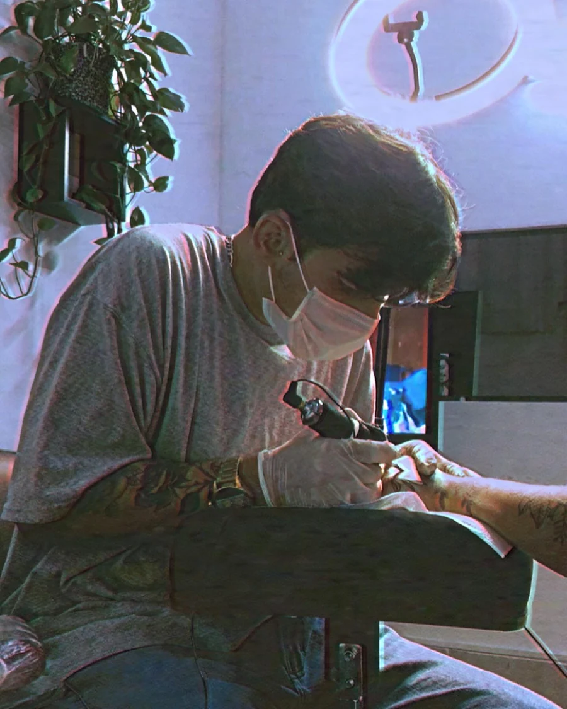

André Ricardo
Realismo · floral · blackwork
Ver portfólio
Di Jesus Tattoo
Realismo preto e cinza · cobertura
Especialista em realismo preto e cinza, com um lema simples: projetos que envelhecem bem.
Retratos, animais, arte sacra e coberturas, além de peças em old school.
2º lugarRealismo na Londrama Tattoo 2025, com o retrato tatuado ao vivo no evento.
Trabalhos recentes do João no Di Jesus. Toque numa foto para ver grande e, se quiser um parecido, é só pedir.
Preencha em um minuto e o pedido chega pronto no WhatsApp dele.
Conte o que quer, o local do corpo e o tamanho.
Mande fotos e referências no WhatsApp.
João passa o valor e o tempo de sessão.
Você escolhe a data e o desenho fica pronto.
Realismo · floral · blackwork
Ver portfólioOld school · pontilhismo · geometria
Ver portfólioBody piercing
Ver portfólio